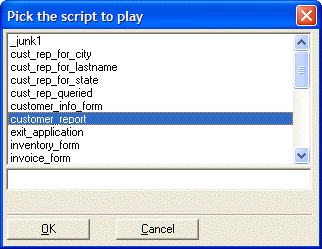

UI_SELECT_SCRIPT()
Syntax
Script_Name as C = UI_SELECT_SCRIPT( [ Script_List as C [, Title as C [, Rows as N [ Columns as N [, Mode as N ]]]]] )
Argument | Description |
Script_Name | The name of the selected script. |
Script_List | Optional. Default = All scripts. A CR-LF delimited list of scripts. |
Title | Optional. The title of the dialog box. |
Rows | Optional. The number of rows visible in the list box. |
Columns | Optional. The width of the list box in characters. |
Mode | Optional.
|
Description
The UI_SELECT_SCRIPT() function displays the Pick the script to play dialog box. The selected script is executed.

Limitations
Desktop applications only.
Example
? ui_select_script() = "customer_report" |
See Also
((User Interaction _UI_ Functions|User Interaction (UI) Functions)), Script Functions, Menu Functions